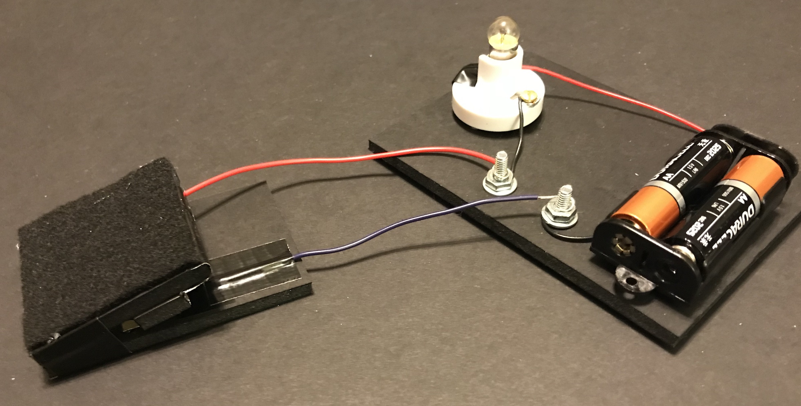

How Does a Switch Work In a Circuit?
Most basic switches work with two pieces of metal. When the switch is in the off position, the pieces of metal are apart, but when the switch is in the on position, the two pieces of metal touch allowing the current to flow across them.
Example
This switch has two pieces of aluminum foil inside. When the switch is pressed down the two pieces of foil touch and the circuit is closed.
When the switch is released the two pieces of foil are apart and the light goes off, since electricity is not able to flow.
